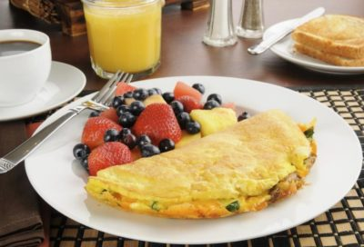

Recetas de desayuno rápido
Homepage
Our Clients
About Us
Privacy policy
Terms and Conditions
Photo gallery
Contacts
Welcome to Recetas de desayuno rápido
Desayunos rapidos y faciles - 1,400 recetas caseras- Cookpad
22 desayunos muy saludables, rápidos y deliciosos - 10 .
30 desayunos saludables: recetas fáciles y rápidas - El Mueble
29 desayunos completos, fáciles y rápidos para saciarte toda .
Desayunos Rápidos | Ideas fáciles y saludables | BABYCOCINA
200 ideas de Recetas de Desayunos en 2021 - Pinterest
Desayunos rápidos y fáciles de hacer para toda la familia .
Desayuno en 5 minutos con solo 2 ingredientes - Recetas de .
Los mejores desayunos y brunch para preparar en casa, muy .
7 recetas de desayunos saludables y 9 utensilios para .
Delicioso fácil y muy : Hoy os enseño a preparar este muy rico y fácil que también .
Contact
2021.06.20 21:17
First Name
Last Name
Country
Germany
Italy
Spanish
Australia
Canada
USA
Subject
<div class="mc_vtvc_th b_canvas"><div class="cico" style="width:234px;height:131px;"><div class="rms_iac" style="height:131px;line-height:131px;width:234px;" data-height="131" data-width="234" data-alt="PARA 👉 DESAYUNO o POSTRE FÁCIL y RÁPIDO!! Receta ITALIANA sin HORNO | Recetas en Casayfamiliatv" data-role="presentation" data-class="rms_img" data-src="https://tse1.mm.bing.net/th?id=OVP.bBz91pfqn5vTsU88yAfEKQEsDh" frameborder="0" allow="accelerometer; autoplay; encrypted-media; gyroscope; picture-in-picture" allowfullscreen>

Vivamus fermentum nibh
© Recetas de desayuno rápido. All rights reserved. | Photos by Fotogrph
Twitter
Pinterest
Google+
Pinterest